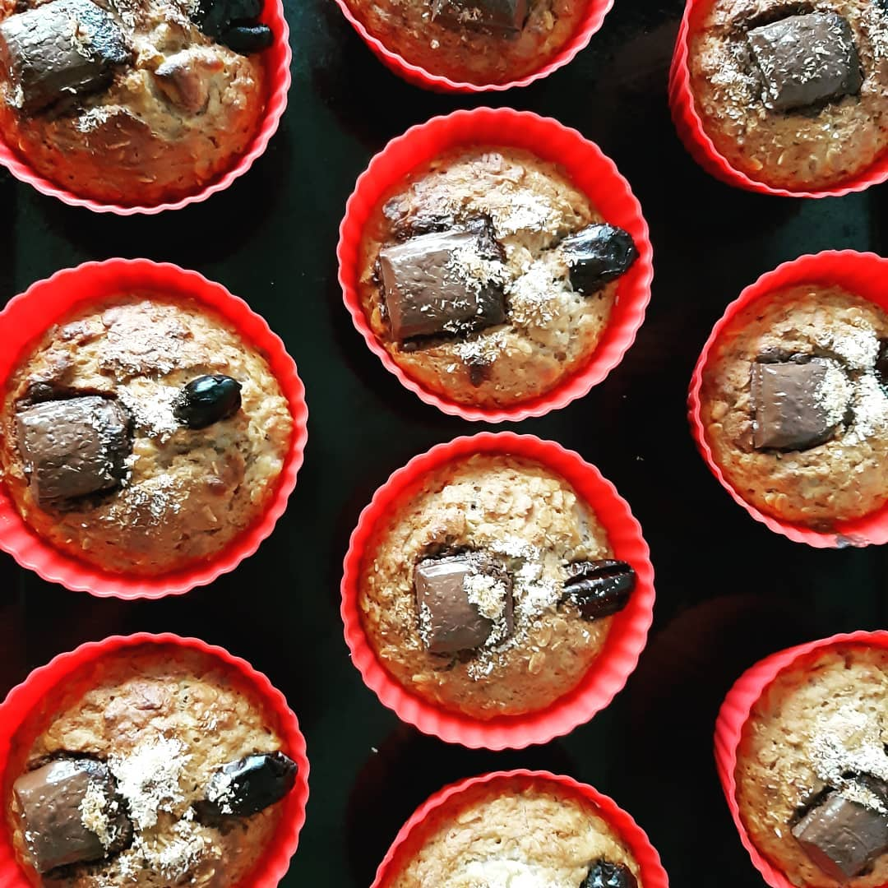

Ahojte😍😗😍, určite to všetky baby doma poznáte, že niektoré jedlá zmiznú z plechu alebo z taniera skôr ako ich stihnete odfotiť....😜😜😜
Ja som sa už poučila a preto cvaknem aj keď vyberiem z rúry, a aj keď by muffinky potrebovali nejako nastajlovať.....
Nevadí, hlavne, že vám viem sem posunúť receptík a máte aspoň jednu fotočku🧡🧡🧡
Suroviny:
- 150g hladkej špaldovej múky
- 100g práškový cukor
- 2 lyžice kakaa
- 3 zrelé banány
- 80ml olej
- 2 lyžičky kypriaci prášok
- 1 veľké alebo 2 malé vajíčka
- 1 lyžicu ovsených vločiek
- na vrch som dala kocku horkej čokolády a 1 ďatlu
Roztlačíte poriadne banány, vymiešala som vajíčko s cukrom, pridáte olej a potom všetky ostatné suroviny. Ak by bolo cesto husté, kvapka mlieka to spraví.....veď kto pečie, tak už vie aká má byť konzistencia cesta. Vrch ozdobte tým, čo máte radi, ja som aj troškou kokosu posypala.
Pečiem v silikónových formičkách na 200 stupňov
cca pol hodinku, kontrolujte podľa vašej rúry.
Dobrú chuť😃🙃😃🙃😃
#varimpreradost #luciinerecepty
#dnespečiem #dnespeču #backenmitliebe #mufinky #mafinki #muffinsfit #jednoduchýrecept #zdravoachutne❤️ #einfacherezeptideen #easyandhealthyrecipe #easyandyumy #yumyums #spaldovemufiny #čokolada #cocoacake #chocolatecake #bananovemufiny #bananacake🍌 #healthyfoodblog #jímezdravě #dnesjím #fitjídlo #receptík #pysznosci #zdrovo #svačinka #jidloprodeti #predetičky